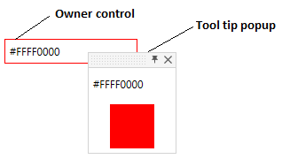

This is ToolTip that can be pinned by user.
Inherits from System.Windows.Controls.ContentControl.
Hover the owner control to see the tool tips. Move tool tip to automatically pin it.
PinnableToolTip works with asistance of PinnableToolTipService that exposes attached properties to attach tool tips to controls.

Properties
PinnableToolTipService attached properties
| Property name | Description |
|---|---|
| InitialShowDelay | Uses to set initial popup show delay. |
| IsToolTipOwner | Uses to set tool tip owner. |
| Placement | Uses to set tooltip Placement. |
| PlacementTarget | Uses to set tooltip placement target. |
| ShowDuration | Uses to set tooltip duration. |
| ToolTip | Uses to attach tooltip to parent control. |
PinnableToolTip
| Property name | Description |
|---|---|
| AccentColorBrush | Gets or sets accent color. |
| AllowCloseByUser | Gets or sets value indicating whether tool tip can be closed by user. |
| GripColor | Gets or sets tool tip grip color. |
| HorizontalOffset | Gets or sets tool tip horizontal offset. |
| IsOpen | Gets value indicating whether tool tip is opened. |
| IsPinned | Gets or sets value whether tool tip is pinned. |
| Owner | Gets or sets ToolTip owner control. |
| ResizeMode | Gets or sets tool tip resize mode. |
| VerticalOffset | Gets or sets tool tip vertical offset. |
Events
| Event name | Description |
|---|---|
| IsOpenChanged | Occurs when tool tip is opened/closed. |
| IsPinnedChanged | Occurs when tool tip is pinned/unpinned. |
How to use
Use PinnableToolTipService to attach tool tip to owner control.
<Border BorderThickness="1" Width="150">
<TextBlock Text="{Binding}" Margin="5"/>
<orc:PinnableToolTipService.ToolTip>
<orc:PinnableToolTip AllowCloseByUser="True" ResizeMode="CanResize" MinWidth="100" MinHeight="100"
HorizontalOffset="-12" VerticalOffset="-12">
<!-- Using a content template allows to delay loading of the inner visual tree, which is much faster -->
<orc:PinnableToolTip.ContentTemplate>
<DataTemplate>
<StackPanel>
<Label Content="this is tool tip" />
<Border Margin="5" Width="50"
Height="50" Background="{Binding}" />
</StackPanel>
</DataTemplate>
</orc:PinnableToolTip.ContentTemplate>
</orc:PinnableToolTip>
</orc:PinnableToolTipService.ToolTip>
</Border>
If you pass any control as ToolTip to PinnableToolTipService it will be wrapped by PinnableToolTip.
<Border BorderThickness="1" Width="150">
<TextBlock Text="{Binding}" Margin="5"/>
<orc:PinnableToolTipService.ToolTip>
<StackPanel>
<Label Content="this is tool tip" />
<Border Margin="5" Width="50"
Height="50" Background="{Binding}" />
</StackPanel>
</orc:PinnableToolTipService.ToolTip>
</Border>